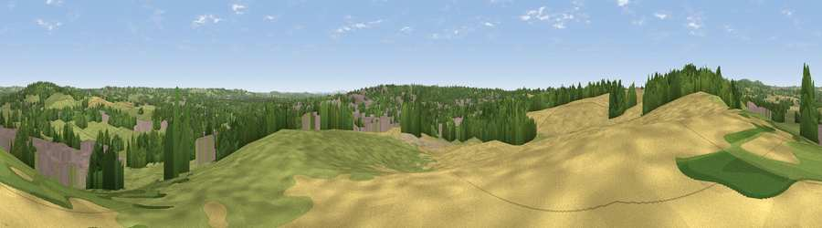

Viewpoint near Bordesley
#27134 in England · top 43% of its area beats it · near Bordesley · access?Where it is
The exact computed spot (SP 03275 69075). Click the marker for map links.
Public access: no public right of way or access land is recorded at this exact spot — it may be on private land. Computed from Natural England's CRoW access layer and OpenStreetMap rights of way — not the legal definitive map. Always verify locally.
The view, rendered

A 360° render of this exact spot computed from the terrain model, tree cover and land cover — summer colours, afternoon light, calibrated against photographs of famous viewpoints. Real trees, hedges and buildings will differ in detail.
The panorama
Grey silhouette: terrain skyline in each direction (720 bearings, Earth curvature and refraction included). Dashed green: skyline with trees (+15 m) and buildings (+8 m) as obstacles. Blue strip: how far the ground is visible on each bearing.
Where the view opens
Wedge length = distance to the farthest visible ground on that bearing (vegetation-aware). Rings at 10, 25 and 50 km.
What fills the view
38% grassland · 22% cropland · 22% woodland · 16% built-up ·
Angular shares of the visible panorama (visual magnitude), not map area. Landscape diversity 0.60 (0–1 Shannon).
Key numbers
More beautiful places nearby
The staircase of upgrades: each row has a higher view potential than everything closer. Driving times are estimates from straight-line distance, calibrated against real road routing — check an actual route before setting out.
| Place | Direction | Drive | Score |
|---|---|---|---|
| Cobley Hill | NW · 3 km | ~7 min | 53.7 |
| Caspidge Hill | WNW · 6 km | ~12 min | 58.4 |
| Holywell Hill | NW · 10 km | ~19 min | 69.4 |
| Windmill Hill | NW · 11 km | ~20 min | 73.2 |
| Viewpoint near Clent | NW · 15 km | ~27 min | 73.8 |
| Viewpoint near Clent | NW · 15 km | ~27 min | 74.3 |
| Viewpoint near Abberley | W · 27 km | ~43 min | 77.5 |
| Viewpoint near Abberley | W · 28 km | ~44 min | 78.1 |
52.31977, -1.95338 · source: screening · position refined by local search. Computed location — check access rights before visiting.